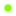

<!doctype html>
<html lang="en">
    <head>
        <meta charset="utf-8">
        <meta http-equiv="X-UA-Compatible" content="IE=edge">
        <meta name="viewport" content="initial-scale=1,user-scalable=no,maximum-scale=1,width=device-width">
        <meta name="mobile-web-app-capable" content="yes">
        <meta name="apple-mobile-web-app-capable" content="yes">
        <link rel="stylesheet" href="css/leaflet.css"><link rel="stylesheet" href="css/L.Control.Locate.min.css">
        <link rel="stylesheet" href="css/qgis2web.css"><link rel="stylesheet" href="css/fontawesome-all.min.css">
        <link rel="stylesheet" href="css/MarkerCluster.css">
        <link rel="stylesheet" href="css/MarkerCluster.Default.css">
        <style>
        html, body, #map {
            width: 100%;
            height: 100%;
            padding: 0;
            margin: 0;
        }
        </style>
        <title>Monitoring Penanaman</title>
    </head>
    <body>
        <div id="map">
        </div>
        <script src="js/qgis2web_expressions.js"></script>
        <script src="js/leaflet.js"></script><script src="js/L.Control.Locate.min.js"></script>
        <script src="js/multi-style-layer.js"></script>
        <script src="js/leaflet.rotatedMarker.js"></script>
        <script src="js/leaflet.pattern.js"></script>
        <script src="js/leaflet-hash.js"></script>
        <script src="js/Autolinker.min.js"></script>
        <script src="js/rbush.min.js"></script>
        <script src="js/labelgun.min.js"></script>
        <script src="js/labels.js"></script>
        <script src="js/leaflet.markercluster.js"></script>
        <script src="data/SampelMonitoring_2.js"></script>
        <script src="data/Geotagging_3.js"></script>
        <script src="data/PolygonSite_4.js"></script>
        <script src="data/PointSite_5.js"></script>
        <script>
        var highlightLayer;
        function highlightFeature(e) {
            highlightLayer = e.target;

            if (e.target.feature.geometry.type === 'LineString') {
              highlightLayer.setStyle({
                color: '#ffff00',
              });
            } else {
              highlightLayer.setStyle({
                fillColor: '#ffff00',
                fillOpacity: 1
              });
            }
        }
        var map = L.map('map', {
            zoomControl:true, maxZoom:28, minZoom:1
        }).fitBounds([[-7.4757164391997595,103.50982048055081],[-4.932416580823011,108.72501401036831]]);
        var hash = new L.Hash(map);
        map.attributionControl.setPrefix('<a href="https://github.com/tomchadwin/qgis2web" target="_blank">qgis2web</a> &middot; <a href="https://leafletjs.com" title="A JS library for interactive maps">Leaflet</a> &middot; <a href="https://qgis.org">QGIS</a>');
        var autolinker = new Autolinker({truncate: {length: 30, location: 'smart'}});
        function removeEmptyRowsFromPopupContent(content, feature) {
         var tempDiv = document.createElement('div');
         tempDiv.innerHTML = content;
         var rows = tempDiv.querySelectorAll('tr');
         for (var i = 0; i < rows.length; i++) {
             var td = rows[i].querySelector('td.visible-with-data');
             var key = td ? td.id : '';
             if (td && td.classList.contains('visible-with-data') && feature.properties[key] == null) {
                 rows[i].parentNode.removeChild(rows[i]);
             }
         }
         return tempDiv.innerHTML;
        }
        document.querySelector(".leaflet-popup-pane").addEventListener("load", function(event) {
          var tagName = event.target.tagName,
            popup = map._popup;
          // Also check if flag is already set.
          if (tagName === "IMG" && popup && !popup._updated) {
            popup._updated = true; // Set flag to prevent looping.
            popup.update();
          }
        }, true);
        L.control.locate({locateOptions: {maxZoom: 19}}).addTo(map);
        var bounds_group = new L.featureGroup([]);
        function setBounds() {
        }
        map.createPane('pane_GoogleSatellite_0');
        map.getPane('pane_GoogleSatellite_0').style.zIndex = 400;
        var layer_GoogleSatellite_0 = L.tileLayer('https://mt1.google.com/vt/lyrs=s&x={x}&y={y}&z={z}', {
            pane: 'pane_GoogleSatellite_0',
            opacity: 1.0,
            attribution: '',
            minZoom: 1,
            maxZoom: 28,
            minNativeZoom: 0,
            maxNativeZoom: 19
        });
        layer_GoogleSatellite_0;
        map.addLayer(layer_GoogleSatellite_0);
        map.createPane('pane_OpenStreetMap_1');
        map.getPane('pane_OpenStreetMap_1').style.zIndex = 401;
        var layer_OpenStreetMap_1 = L.tileLayer('http://tile.openstreetmap.org/{z}/{x}/{y}.png', {
            pane: 'pane_OpenStreetMap_1',
            opacity: 1.0,
            attribution: '',
            minZoom: 1,
            maxZoom: 28,
            minNativeZoom: 0,
            maxNativeZoom: 18
        });
        layer_OpenStreetMap_1;
        map.addLayer(layer_OpenStreetMap_1);
        function pop_SampelMonitoring_2(feature, layer) {
            layer.on({
                mouseout: function(e) {
                    for (i in e.target._eventParents) {
                        e.target._eventParents[i].resetStyle(e.target);
                    }
                },
                mouseover: highlightFeature,
            });
            var popupContent = '<table>\
                    <tr>\
                        <th scope="row">Jenis</th>\
                        <td class="visible-with-data" id="Jenis">' + (feature.properties['Jenis'] !== null ? autolinker.link(feature.properties['Jenis'].toLocaleString()) : '') + '</td>\
                    </tr>\
                    <tr>\
                        <th scope="row">Kondisi</th>\
                        <td class="visible-with-data" id="Kondisi">' + (feature.properties['Kondisi'] !== null ? autolinker.link(feature.properties['Kondisi'].toLocaleString()) : '') + '</td>\
                    </tr>\
                    <tr>\
                        <th scope="row">Tinggi</th>\
                        <td class="visible-with-data" id="Tinggi">' + (feature.properties['Tinggi'] !== null ? autolinker.link(feature.properties['Tinggi'].toLocaleString()) : '') + '</td>\
                    </tr>\
                    <tr>\
                        <th scope="row">URL Foto</th>\
                        <td class="visible-with-data" id="URL Foto">' + (feature.properties['URL Foto'] !== null ? autolinker.link(feature.properties['URL Foto'].toLocaleString()) : '') + '</td>\
                    </tr>\
                </table>';
            layer.bindPopup(popupContent, {maxHeight: 400});
            var popup = layer.getPopup();
            var content = popup.getContent();
            var updatedContent = removeEmptyRowsFromPopupContent(content, feature);
            popup.setContent(updatedContent);
        }

        function style_SampelMonitoring_2_0() {
            return {
                pane: 'pane_SampelMonitoring_2',
                radius: 4.0,
                stroke: false,
                fill: true,
                fillOpacity: 1,
                fillColor: 'rgba(128,0,255,1.0)',
                interactive: true,
            }
        }
        map.createPane('pane_SampelMonitoring_2');
        map.getPane('pane_SampelMonitoring_2').style.zIndex = 402;
        map.getPane('pane_SampelMonitoring_2').style['mix-blend-mode'] = 'normal';
        var layer_SampelMonitoring_2 = new L.geoJson(json_SampelMonitoring_2, {
            attribution: '',
            interactive: true,
            dataVar: 'json_SampelMonitoring_2',
            layerName: 'layer_SampelMonitoring_2',
            pane: 'pane_SampelMonitoring_2',
            onEachFeature: pop_SampelMonitoring_2,
            pointToLayer: function (feature, latlng) {
                var context = {
                    feature: feature,
                    variables: {}
                };
                return L.circleMarker(latlng, style_SampelMonitoring_2_0(feature));
            },
        });
        var cluster_SampelMonitoring_2 = new L.MarkerClusterGroup({showCoverageOnHover: false,
            spiderfyDistanceMultiplier: 2});
        cluster_SampelMonitoring_2.addLayer(layer_SampelMonitoring_2);

        bounds_group.addLayer(layer_SampelMonitoring_2);
        cluster_SampelMonitoring_2.addTo(map);
        function pop_Geotagging_3(feature, layer) {
            layer.on({
                mouseout: function(e) {
                    for (i in e.target._eventParents) {
                        e.target._eventParents[i].resetStyle(e.target);
                    }
                },
                mouseover: highlightFeature,
            });
            var popupContent = '<table>\
                    <tr>\
                        <th scope="row">Jenis</th>\
                        <td class="visible-with-data" id="Jenis">' + (feature.properties['Jenis'] !== null ? autolinker.link(feature.properties['Jenis'].toLocaleString()) : '') + '</td>\
                    </tr>\
                    <tr>\
                        <th scope="row">URL Foto</th>\
                        <td class="visible-with-data" id="URL Foto">' + (feature.properties['URL Foto'] !== null ? autolinker.link(feature.properties['URL Foto'].toLocaleString()) : '') + '</td>\
                    </tr>\
                </table>';
            layer.bindPopup(popupContent, {maxHeight: 400});
            var popup = layer.getPopup();
            var content = popup.getContent();
            var updatedContent = removeEmptyRowsFromPopupContent(content, feature);
            popup.setContent(updatedContent);
        }

        function style_Geotagging_3_0() {
            return {
                pane: 'pane_Geotagging_3',
                radius: 4.0,
                stroke: false,
                fill: true,
                fillOpacity: 1,
                fillColor: 'rgba(132,255,1,1.0)',
                interactive: true,
            }
        }
        map.createPane('pane_Geotagging_3');
        map.getPane('pane_Geotagging_3').style.zIndex = 403;
        map.getPane('pane_Geotagging_3').style['mix-blend-mode'] = 'normal';
        var layer_Geotagging_3 = new L.geoJson(json_Geotagging_3, {
            attribution: '',
            interactive: true,
            dataVar: 'json_Geotagging_3',
            layerName: 'layer_Geotagging_3',
            pane: 'pane_Geotagging_3',
            onEachFeature: pop_Geotagging_3,
            pointToLayer: function (feature, latlng) {
                var context = {
                    feature: feature,
                    variables: {}
                };
                return L.circleMarker(latlng, style_Geotagging_3_0(feature));
            },
        });
        var cluster_Geotagging_3 = new L.MarkerClusterGroup({showCoverageOnHover: false,
            spiderfyDistanceMultiplier: 2});
        cluster_Geotagging_3.addLayer(layer_Geotagging_3);

        bounds_group.addLayer(layer_Geotagging_3);
        cluster_Geotagging_3.addTo(map);
        function pop_PolygonSite_4(feature, layer) {
            layer.on({
                mouseout: function(e) {
                    for (i in e.target._eventParents) {
                        e.target._eventParents[i].resetStyle(e.target);
                    }
                },
                mouseover: highlightFeature,
            });
            var popupContent = '<table>\
                    <tr>\
                        <th scope="row">Provinsi</th>\
                        <td class="visible-with-data" id="Provinsi">' + (feature.properties['Provinsi'] !== null ? autolinker.link(feature.properties['Provinsi'].toLocaleString()) : '') + '</td>\
                    </tr>\
                    <tr>\
                        <th scope="row">Lokasi</th>\
                        <td class="visible-with-data" id="Lokasi">' + (feature.properties['Lokasi'] !== null ? autolinker.link(feature.properties['Lokasi'].toLocaleString()) : '') + '</td>\
                    </tr>\
                    <tr>\
                        <th scope="row">Luas (Ha)</th>\
                        <td class="visible-with-data" id="Luas (Ha)">' + (feature.properties['Luas (Ha)'] !== null ? autolinker.link(feature.properties['Luas (Ha)'].toLocaleString()) : '') + '</td>\
                    </tr>\
                </table>';
            layer.bindPopup(popupContent, {maxHeight: 400});
            var popup = layer.getPopup();
            var content = popup.getContent();
            var updatedContent = removeEmptyRowsFromPopupContent(content, feature);
            popup.setContent(updatedContent);
        }

        var pattern_PolygonSite_4_0 = new L.StripePattern({
            weight: 0.3,
            spaceWeight: 2.0,
            color: '#377eb8',
            opacity: 1.0,
            spaceOpacity: 0,
            angle: 315
        });
        pattern_PolygonSite_4_0.addTo(map);
        function style_PolygonSite_4_0() {
            return {
                pane: 'pane_PolygonSite_4',
                stroke: false,
                fillOpacity: 1,
                fillPattern: pattern_PolygonSite_4_0,
                interactive: false,
            }
        }
        function style_PolygonSite_4_1() {
            return {
                pane: 'pane_PolygonSite_4',
                opacity: 1,
                color: 'rgba(55,126,184,1.0)',
                dashArray: '',
                lineCap: 'square',
                lineJoin: 'bevel',
                weight: 2.0,
                fillOpacity: 0,
                interactive: false,
            }
        }
        map.createPane('pane_PolygonSite_4');
        map.getPane('pane_PolygonSite_4').style.zIndex = 404;
        map.getPane('pane_PolygonSite_4').style['mix-blend-mode'] = 'normal';
        var layer_PolygonSite_4 = new L.geoJson.multiStyle(json_PolygonSite_4, {
            attribution: '',
            interactive: false,
            dataVar: 'json_PolygonSite_4',
            layerName: 'layer_PolygonSite_4',
            pane: 'pane_PolygonSite_4',
            onEachFeature: pop_PolygonSite_4,
            styles: [style_PolygonSite_4_0,style_PolygonSite_4_1,]
        });
        bounds_group.addLayer(layer_PolygonSite_4);
        map.addLayer(layer_PolygonSite_4);
        function pop_PointSite_5(feature, layer) {
            layer.on({
                mouseout: function(e) {
                    for (i in e.target._eventParents) {
                        e.target._eventParents[i].resetStyle(e.target);
                    }
                },
                mouseover: highlightFeature,
            });
            var popupContent = '<table>\
                    <tr>\
                        <th scope="row">Provinsi</th>\
                        <td class="visible-with-data" id="Provinsi">' + (feature.properties['Provinsi'] !== null ? autolinker.link(feature.properties['Provinsi'].toLocaleString()) : '') + '</td>\
                    </tr>\
                    <tr>\
                        <th scope="row">Lokasi</th>\
                        <td class="visible-with-data" id="Lokasi">' + (feature.properties['Lokasi'] !== null ? autolinker.link(feature.properties['Lokasi'].toLocaleString()) : '') + '</td>\
                    </tr>\
                </table>';
            layer.bindPopup(popupContent, {maxHeight: 400});
            var popup = layer.getPopup();
            var content = popup.getContent();
            var updatedContent = removeEmptyRowsFromPopupContent(content, feature);
            popup.setContent(updatedContent);
        }

        function style_PointSite_5_0() {
            return {
                pane: 'pane_PointSite_5',
                radius: 4.0,
                stroke: false,
                fill: true,
                fillOpacity: 1,
                fillColor: 'rgba(0,0,0,1.0)',
                interactive: true,
            }
        }
        map.createPane('pane_PointSite_5');
        map.getPane('pane_PointSite_5').style.zIndex = 405;
        map.getPane('pane_PointSite_5').style['mix-blend-mode'] = 'normal';
        var layer_PointSite_5 = new L.geoJson(json_PointSite_5, {
            attribution: '',
            interactive: true,
            dataVar: 'json_PointSite_5',
            layerName: 'layer_PointSite_5',
            pane: 'pane_PointSite_5',
            onEachFeature: pop_PointSite_5,
            pointToLayer: function (feature, latlng) {
                var context = {
                    feature: feature,
                    variables: {}
                };
                return L.circleMarker(latlng, style_PointSite_5_0(feature));
            },
        });
        bounds_group.addLayer(layer_PointSite_5);
        map.addLayer(layer_PointSite_5);
        map.on("zoomend", function(e) {
            if (map.getZoom() <= 19 && map.getZoom() >= 8) {
                map.addLayer(layer_PolygonSite_4);
            } else if (map.getZoom() > 19 || map.getZoom() < 8) {
                map.removeLayer(layer_PolygonSite_4);
            }
            if (map.getZoom() <= 13 && map.getZoom() >= 2) {
                map.addLayer(layer_PointSite_5);
            } else if (map.getZoom() > 13 || map.getZoom() < 2) {
                map.removeLayer(layer_PointSite_5);
            }
        });
            if (map.getZoom() <= 19 && map.getZoom() >= 8) {
                map.addLayer(layer_PolygonSite_4);
            } else if (map.getZoom() > 19 || map.getZoom() < 8) {
                map.removeLayer(layer_PolygonSite_4);
            }
            if (map.getZoom() <= 13 && map.getZoom() >= 2) {
                map.addLayer(layer_PointSite_5);
            } else if (map.getZoom() > 13 || map.getZoom() < 2) {
                map.removeLayer(layer_PointSite_5);
            }
            var title = new L.Control();
            title.onAdd = function (map) {
                this._div = L.DomUtil.create('div', 'info');
                this.update();
                return this._div;
            };
            title.update = function () {
                this._div.innerHTML = '<h2>Monitoring Penanaman</h2>';
            };
            title.addTo(map);
            var abstract = new L.Control({'position':'bottomleft'});
            abstract.onAdd = function (map) {
                this._div = L.DomUtil.create('div',
                'leaflet-control abstract');
                this._div.id = 'abstract'

                    abstract.show();
                    return this._div;
                };
                abstract.show = function () {
                    this._div.classList.remove("abstract");
                    this._div.classList.add("abstractUncollapsed");
                    this._div.innerHTML = 'Peta interaktif untuk visualisai data geotagging dan monitoring tanaman bagian dari program penanaman pohon "One Tree Planted" bersama Rainforest Alliance dan beberapa lembaga lokal terkait yang dilaksanakan pada periode tahun 2021 - 2023';
            };
            abstract.addTo(map);
        var baseMaps = {};
        L.control.layers(baseMaps,{' Point Site': layer_PointSite_5,' Polygon Site': layer_PolygonSite_4,' Geotagging': cluster_Geotagging_3,' Sampel Monitoring': cluster_SampelMonitoring_2,"OpenStreetMap": layer_OpenStreetMap_1,"Google Satellite": layer_GoogleSatellite_0,},{collapsed:false}).addTo(map);
        setBounds();
        var i = 0;
        layer_PointSite_5.eachLayer(function(layer) {
            var context = {
                feature: layer.feature,
                variables: {}
            };
            layer.bindTooltip((layer.feature.properties['Lokasi'] !== null?String('<div style="color: #000000; font-size: 10pt; font-weight: bold; font-style: italic; font-family: \'Open Sans\', sans-serif;">' + layer.feature.properties['Lokasi']) + '</div>':''), {permanent: true, offset: [-0, -16], className: 'css_PointSite_5'});
            labels.push(layer);
            totalMarkers += 1;
              layer.added = true;
              addLabel(layer, i);
              i++;
        });
        resetLabels([layer_SampelMonitoring_2,layer_PolygonSite_4,layer_PointSite_5]);
        map.on("zoomend", function(){
            resetLabels([layer_SampelMonitoring_2,layer_PolygonSite_4,layer_PointSite_5]);
        });
        map.on("layeradd", function(){
            resetLabels([layer_SampelMonitoring_2,layer_PolygonSite_4,layer_PointSite_5]);
        });
        map.on("layerremove", function(){
            resetLabels([layer_SampelMonitoring_2,layer_PolygonSite_4,layer_PointSite_5]);
        });
        </script>
    </body>
</html>
